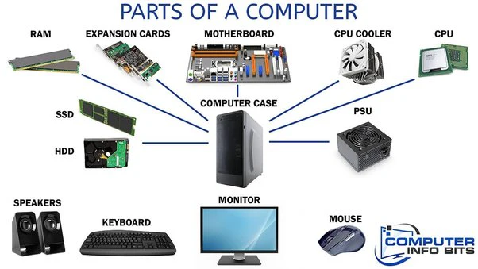

Bauteile eines PCs
Der erste Personal Computer war der MITS Altair 8800 von 1975 und markiert den Beginn der modernen PC-Ära. Mit ihm erzielten auch Softwareentwickler wie Bill Gates und Paul Allen grosse Erfolge. Ein PC besteht aus verschiedenen Komponenten, die jeweils eine wichtige Aufgabe erfüllen. In diesem Fachbericht werden die wichtigsten PC-Komponenten vorgestellt und ihre Funktionen erklärt.
CPU
Die CPU steht für „Central Processing Unit“, auf Deutsch die Zentrale Verarbeitungseinheit. Sie ist das Herzstück eines jeden Computers und übernimmt die wichtigsten Aufgaben: Sie führt Befehle aus, verarbeitet Daten und sorgt dafür, dass alle anderen Komponenten zusammenarbeiten. Man kann sich die CPU wie das Gehirn des Computers vorstellen, ohne sie würde kein Programm laufen und keine Berechnung funktionieren. Die CPU besteht aus Millionen von winzigen Transistoren, die elektrische Signale verarbeiten. Sie arbeitet in sogenannten Taktraten, gemessen in Gigahertz (GHz), was angibt, wie viele Befehle sie pro Sekunde ausführen kann. Je höher die Taktrate, desto schneller kann die CPU arbeiten.
Motherboard
Das Motherboard, auch Hauptplatine genannt, ist die zentrale Platine eines Computers. Es verbindet alle wichtigen Komponenten wie Prozessor, Arbeitsspeicher, Grafikkarte und weitere Hardware miteinander. Auf dem Mainboard werden die Teile entweder aufgesteckt oder per Kabel angeschlossen. Dadurch ermöglicht es die Kommunikation zwischen den Komponenten und sorgt dafür, dass der Computer korrekt und fehlerfrei funktioniert.
Arbeitsspeicher
Der Arbeitsspeicher (RAM) ist ein wichtiger Bestandteil jedes Computers und dient als temporärer Speicher für Daten, die gerade von der CPU verarbeitet werden. RAM steht für „Random Access Memory“. Je mehr RAM ein Computer hat, desto mehr Programme können gleichzeitig laufen, ohne dass das System langsamer wird.
Grafikkarte
Die Grafikkarte, auch GPU (Graphics Processing Unit) genannt, ist eine Hardwarekomponente, die für die Darstellung von Bildern, Videos und Grafiken zuständig ist. Sie entlastet die CPU, indem sie Grafikdaten eigenständig verarbeitet. Eine Grafikkarte ist besonders wichtig für Spiele.
Speichermedien
- SSD: Die Abkürzung SSD steht für „Solid State Drive“. Im Gegensatz zur HDD hat eine SSD keine beweglichen Teile, wodurch sie schneller, leiser und zuverlässiger arbeitet. Die Hauptaufgabe einer SSD ist es, schnellen Zugriff auf gespeicherte Daten zu ermöglichen.
- HDD: Die Abkürzung HDD steht für „Hard Disk Drive“. Eine HDD ist ein magnetisches Speichermedium, das Daten dauerhaft speichert. Sie bietet in der Regel grösseren Speicherplatz zu einem günstigeren Preis und speichert alle wichtigen Daten, Programme und das Betriebssystem eines Computers. Ohne Festplatte könnte ein PC nicht starten.
Kühlung
Kühler sorgen dafür, dass die CPU nicht überhitzt. Mikroprozessoren erzeugen beim Arbeiten Wärme, die ohne Kühlung zu Fehlfunktionen oder sogar zur Zerstörung des Chips führen kann. Die Aufgabe des Kühlers ist es, die Abwärme von der CPU wegzuleiten.
Gehäuse
Das Gehäuse schützt die empfindlichen Bauteile eines Computers vor Staub, Schmutz und Beschädigungen. Gleichzeitig sorgt es für eine ordentliche Anordnung der Hardware.
Netzteil
Das Netzteil liefert Strom an alle Computerkomponenten. Es wandelt die Spannung aus der Steckdose in die für die Hardware benötigte Gleichspannung um und sorgt dafür, dass jede Komponente die richtige Stromversorgung erhält.
Fazit
Ein Computer besteht aus vielen Komponenten, die jeweils eine wichtige Aufgabe erfüllen und zusammenarbeiten müssen, damit das System zuverlässig funktioniert.